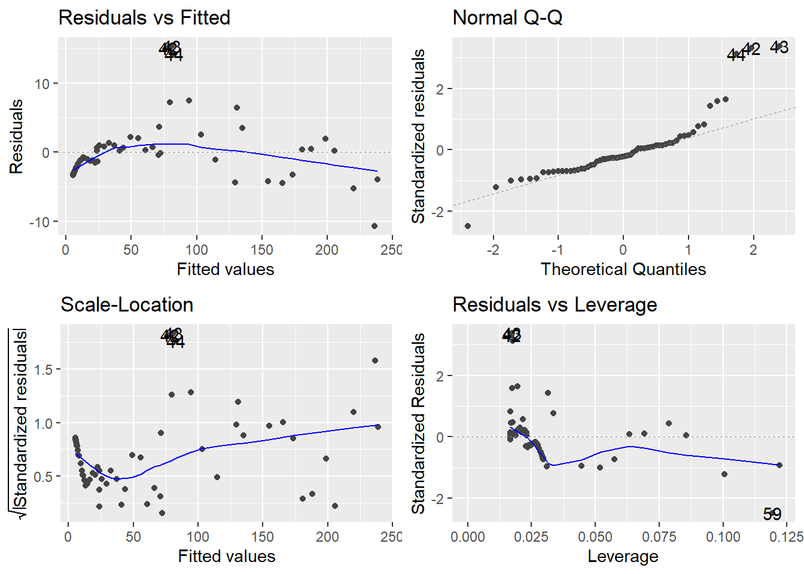
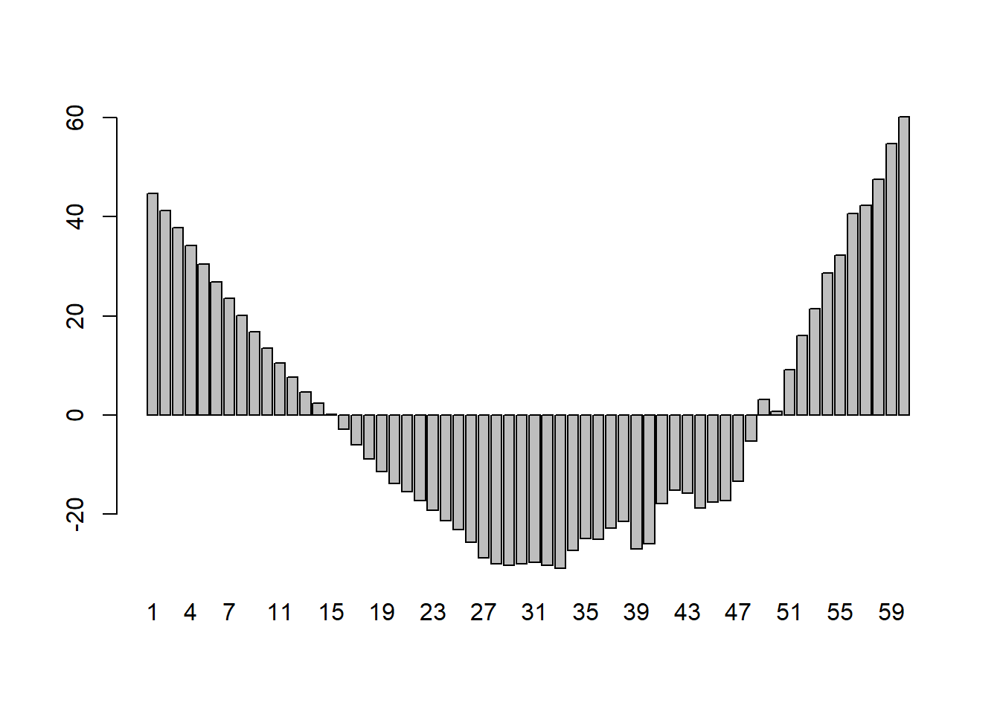

Spurious Regressions
Reproduced in Quarto in R by the Author
Introduction
In previous lectures Causal Explanation of Autonomy & Invariance of Regression Relationships, we have seen the essential importance of analyzing the causal structure of the variables under study via path diagrams. In this lecture, we study one aspect of this which creates serious problems for understanding and interpreting regression results. This is the problem of a common cause.
\(Z\) is a common cause of \(X\) and \(Y\) if \(Z\) \(\Rightarrow\) \(X\) and \(Z\) \(\Rightarrow\) \(Y\). When this happens, \(X\) and \(Y\) will be correlated, but neither variable causes the other. In such situations, a regression of \(Y\) on \(X\) will give results which show, according to standard methods for analysis, that \(X\) is a strong determinant of \(Y\). This is called a spurious regression, or a nonsense regression. In this lecture, we will study some examples of this phenomena in real world data.
A Causal Relationship: A Consumption Function
Data on annual GDP, Consumption, and Investment, for Singapore, taken from the WDI data set of the World Bank, is plotted below:
The Keynesian consumption function is one of the most widely accepted and estimated regression models. The causal hypothesis is that Income (GDP) determines Consumption (Con): GDP \(Rightarrow\) Con. The simplest regression model which embodies this relationship is: Con = a + b GDP. Running this regression on the data leads to the following results:
# A tibble: 60 × 5
ID SgpCon SgpGDP SgpCon_hat residual
<int> <dbl> <dbl> <dbl> <dbl>
1 1 2.09 2.04 5.42 -3.33
2 2 2.33 2.22 5.51 -3.18
3 3 2.44 2.40 5.60 -3.15
4 4 2.61 2.68 5.73 -3.12
5 5 2.53 2.60 5.69 -3.16
6 6 2.66 2.82 5.80 -3.13
7 7 2.92 3.17 5.97 -3.04
8 8 3.25 3.60 6.18 -2.92
9 9 3.65 4.15 6.44 -2.79
10 10 4.02 4.82 6.77 -2.74
# ℹ 50 more rows

| (1) | |
| (Intercept) | 4.425 *** |
| (0.794) | |
| SgpGDP | 0.486 *** |
| (0.004) | |
| N | 60 |
| R2 | 0.996 |
| logLik | -175.410 |
| AIC | 356.821 |
| *** p < 0.001; ** p < 0.01; * p < 0.05. | |
The regression has \(R^2\) of 99.6%, which is interpreted to mean that 99.7% of the variation in Singapore Consumption can be explained by the Singapore GDP. The t-stat of 116 shows that the coefficient 0.486 of SgpGDP is highly significant. The p-value of 0.000 means we can reject the null hypothesis that the true coefficient is 0.0, corresponding to the idea that SgpGDP has no influence on SgpCon. Validity of regression results depends on a large number of assumptions, which are discussed in econometrics textbooks. One of the central assumptions is that the regression residuals should be random, and should come from a common distribution. To check whether or not this holds, we graph the regression residuals, the differences between the actual value and the regression fit:

This plot shows serious problems, since these residuals display systematic behavior. They are all negative and small early. To see how these patterns differ from independent random variables, we provide a graph of independent random variables with mean 0 and standard error 4.579, matching the estimated regression model standard error. The Keynesian consumption function is one of the most widely accepted and estimated regression models. The causal hypothesis is that Income (GDP) determines Consumption (Con): GDP \(\Rightarrow\) Con. The simplest regression model which embodies this relationship is: Con = a + b GDP. Running this regression on the data leads to the following results:

Random residuals frequently switch signs. They do not display any patterns in sequencing. The patterned residuals in the consumption function prove that the regression is not valid. In such situations, econometricians typically assume that the problem is due to missing regressors or wrong functional form. By adding suitable additional regressors, and modifying the functional form, one can generally ensure that the residuals appear to satisfy the assumptions made about them. But, solving the problem of random residuals by this search over regression models creates a serious problem. This can be explained as follows. Some of the fits in the data reflect a genuine real-world relationship. Other patterns are only accidental, and do not reflect any genuine relationship. The more we search, the more likely we are to end up with an accidental pattern. The fact that most regression relationships breakdown very frequently is due to the fact that most of them are accidental patterns in the data without any counterpart in reality.
The coefficient of the regressor is supposed to be a measure of the causal effect. According to the regression above, if SgpGDP goes up by $100, then $49 of it will be spent on consumption. This means that the enormously high proportion of 51% of the income will be saved. Since savings translate to investments, this could account for the dramatic growth of Singapore over the period in question. However, the patterns shown in the errors show that we cannot rely on the validity of this estimate. Vast amounts of experience with estimating this kind of regression function leads to two major conclusions.
1.The estimate 0.49 of the causal effect is highly unstable – by adding many
different plausible variables, we can make it change over a great range of
values. Thus, these regressions do not provide accurate estimates of the key
parameter we want to estimate.
2.The best fitting regressions very often make huge forecasting errors, and
therefore are not very useful for policy. Even though the regression is not very useful in estimating the size of the causal effect, at least the high R-squared SEEMS to confirm the causal effect that SgpGDP => SdpCon. At least, that was widely believed before the 1980’s: high R-squared means that you have a good regression equation. It is this issue that we want to examine in this lecture. That is, we want to clarify how nonsense regressions can have high R-squared.
A Spurious Regression: Correlation without Causation
First, let us just demonstrate the problem by running a nonsense regression of SgpCon on SAfGDP – what is the relationship of Singapore Consumption with South African GDP. Before running the regression, we know that it is nonsense – there should be no relationship, or very little relationship between these two variables. Here is a graph of the two series, re-scaled:
A regression of SgpCon on SAfGDP yields: SgpCon = 16.99 + 0.517 SAfGDP: \(R^2\) is 97%, and the \(t-stat\) of 40.8 on the coefficient 0.517 is very high. Based on the p-value of 0.000, we can safely reject the null hypothesis that the coefficient of SAfGDP is 0. But this is a nonsensical conclusion, if interpreted causally. It is not even remotely possible that a 100 Rand increase in South African GDP will increase consumption in Singapore by 51.7 Singapore Dollars. The central goal of this lecture is to highlight the dramatic difference between this regression and the previous one. While the previous equation of SgpCon on SgpGDP suffers from many defects, it is built on the right foundations of a causal relationship: SgpGDP => SgpCon. The estimated causal coefficient of 0.486 is most likely wrong, because the residuals show patterns violating the assumptions of the regression model. But there is a right coefficient, and we can have hope that we can get to a better estimate by adjusting the equation to fix the flaws in it. In contrast, there is no causal relationship between SAfGDP and SgpCon. The estimated coefficient 0.517 of SAfGDP in the second equation is purely mythical – it is measuring something which does not exist. What lesson do we learn from the fact that, despite this difference, both equations look more or less the same on the surface, with respect to the statistics produced by the regression package? This is discussed in the next section.
The Distinction Between Nominal and Real Econometrics
The central problem with conventional econometrics textbooks is the failure to clarify the difference between correlation and causation. The world of difference between the first and second equation above exists because the first equation attempts to estimate a causal coefficient, while the second provides an estimate of the correlation. Most students of conventional econometrics are never taught the difference between the two. To understand the deeper reason for this failure, it is useful to distinguish between “nominal” and “real” econometrics. By nominal, we mean econometrics techniques for which the names of the variables X and Y are sufficient, and we have no concern with the meaning of these names in the real world. The vast majority of econometrics taught in popular textbooks is nominal – it can be applied to any X and Y. In contrast, real econometrics is concerned with meaning. It is an aspect of real econometrics that the consumption function involves regression of Consumption on GDP and not the other way around. We know that the causation runs from income to consumption in the real world. ALL causal relationships are real world relationships which reflect the operation of real-world mechanisms linking the variables under study. Real relationships cannot be studied within a nominal framework, and this is why conventional textbooks fail to come to grips with the problems created by nonsense regressions. The distinction between the regression of SgpCon on SgpGDP versus SgpCon on SAfGDP is clear in real econometrics, but cannot be explained in nominal econometrics. More generally, conventional regression methods fail to specify the causal structures governing the variables under study, and hence fail to differentiate between causation and correlation.
It is useful to clarify the correct interpretation of the coefficient 0.517 of SAfGDP in the second regression. This measures a correlation that increases in SAfGDP and in SgpCon has happened together (correlation) in the past. If we observe a 100 Rand increase in SAfGDP, we could predict a $51.7 in SgpCon, on the basis of past patterns of correlation. Because this correlation is not based on any underlying causal relationship, it could easily break down in the future. Furthermore, one essential difference between causation and correlation has to do with INTERVENTIONS. The meaning of the causal relationship X \(\Rightarrow\) Y is that changes in X will lead to changes in Y. In contrast, correlations break down under interventions. If we change SAfGDP, we would not expect to see any change in SgpCon. But we know this from “real” considerations – we cannot learn this from anything in the data by themselves.
The Nominalist Solutions
The deeper point is that assessing whether or not a relationship is causal ALWAYS requires going beyond the names of the variables to the real-world concepts represented by the variables. This is why nominal econometrics is unable to distinguish between sensible regressions and nonsense regressions. This point will be argued and defended in detail later in the course. At this point, we will simply illustrate one class of nonsense regressions which have been widely recognized and acknowledged in the econometrics literature. Decades have been spent searching for a cure for this problem – how to distinguish between sense and nonsense – but no answers have been found. This is because no answers can be found within the methodology of nominalist econometrics.
The real solution to the problem of nonsense regressions can only be found by deeper study of causal structures connecting the variables under study. This involves stepping outside the boundaries of nominal econometrics. We will discuss some basics of real econometrics based on causal path diagrams later in this course. The phenomenon of spurious or nonensense regression was highlighted by Granger and Newbold in 1980, the search for solutions has spanned the past few decades. None of these have been successful. We discuss three main approaches developed for this problem below.
Missing Variables
In the second regression, which regresses SgpCon on SAfGDP, the regression has a very high R-squared, and the coefficient of South African GDP is highly significant. This conveys the misleading message that SAfGDP is an extremely important determinant of SgpCon. The traditional “nominalist” understanding of this problem is that it arises from missing variables. The equation is giving us the wrong message, because the central determinant of SgpCon, which is SgpGDP, has been excluded from the equation. This leads to “Omitted Variables Bias”. Failure to put in the correct variables leads to SgpGDP acting as a proxy for the omitted variable, which is why it has a significant coefficient. Based on this approach, we can correct the problem by putting in the missing variable. Accordingly, we run a regression of SgpCon on both SgpGDP and SAfGDP. We expect that now, the SdgGDP will come out significant, and the SAfGDP will no longer be significant. However, the regression result is the following:
Variable Transformation to Stationarity:
The reason for the failure of trend fit may be due to the reasonable assumption that the growth rate is stable across time, so that con_gr=(SgpCon-lag(SgpCon,1))/lag(SgpCon,1)100,gdp_gr=(SgpGDP-lag(SgpGDP,1))/lag(SgpGDP,1)100,gdp_gr_Saf=(SAfGDP-lag(SAfGDP,1))/lag(SAfGDP,1)*100 would be uncorrelated with time. This can be checked by graphing this variable against time, as follows:
| (1) | |
| (Intercept) | 2.162 ** |
| (0.661) | |
| gdp_gr | 0.635 *** |
| (0.056) | |
| N | 59 |
| R2 | 0.694 |
| logLik | -143.053 |
| AIC | 292.105 |
| *** p < 0.001; ** p < 0.01; * p < 0.05. | |
This variable is also uncorrelated with time, at least visually. The variable transformation of taking growth rates has removed the common time trend from both variables. Now it should be possible to run a regression of Consumption on Income which does not suffer from the spurious correlation between the two variables created by the common trend. Unfortunately, this strategy also fails to differentiate between genuine and spurious regressions as we will see. First, let us look at the genuine causal regression of Gr_SgpC on Gr_SgfG: Gr_SdpC = 0.009 + 0.634 Gr_SgpG \(R^2\) is now 69%. It has gone down because we have removed the correlation due to the common factor of time-trend, but it is still very high. The regression provides a good fit. Also, for the first time, the residuals from this regression look random:


This transformation from levels to growth rates has substantially improved the regression results. There is now some hope that the coefficient 0.634 might be a correct measure of a causal effect, if other aspects of the specification are also correct.
However, our main concern is to see if this transformation can distinguish between genuine causal relationships and spurious ones. For this purpose, we run the regression of the growth rate of SgpCon on the growth rate of SAfGDP. This yields the following results:
| (1) | |
| (Intercept) | 1.822 |
| (1.407) | |
| gdp_gr_Saf | 0.539 *** |
| (0.106) | |
| N | 59 |
| R2 | 0.313 |
| logLik | -166.857 |
| AIC | 339.714 |
| *** p < 0.001; ** p < 0.01; * p < 0.05. | |
\(Predicted GrSgpC = 0.006484 + 0.566 GrSAfG\)
This regression also shows that growth rates of South African GDP are highly significant in explaining growth rates of Singaporean Consumption. The regression residuals look random, and support the validity of this regression:

According to conventional econometrics, the causal regression of growth rates of SgpGDP on growth rates of SgpCon allows us to conclude that 63% of changes in Gr_SgpGDP are transmitted to Gr_SgpCon. But, by exactly the same reasoning, we can use the spurious regression of Gr_SgpCon on Gr_SAfGDP to conclude that 56.6% of changes in the growth rate of the South African economy are transmitted to growth rates of Singaporean consumption. The first measurement has some chance being correct, while the second statement is ridiculous.
In this particular case, the missing variables strategy can solve the problem. If we think that the source of the problem in this last equation is that the primary determinant of SgpCon is missing from the equation, we can fix the problem by adding this variable. When we do so, we get the following equation: Gr_SgpC = 0.004 + 0.163 Gr_SAfG + 0.569 Gr_SgpG
| (1) | |
| (Intercept) | 1.032 |
| (0.929) | |
| gdp_gr_Saf | 0.141 |
| (0.083) | |
| gdp_gr | 0.573 *** |
| (0.066) | |
| N | 59 |
| R2 | 0.709 |
| logLik | -141.561 |
| AIC | 291.121 |
| *** p < 0.001; ** p < 0.01; * p < 0.05. | |

Putting in growth rates of both Singapore and South Africa leads to the right result: Singapore GDP is a highly significant determinant, while South African GDP is not significant at the 95% level. Nominal econometrics consists of this kind of exercise, where we try one equation after another in order to get a match to our a priori ideas about the size and strength of the causal effects. This is quite the opposite of what students are taught about this methodology. It is not that we allow the data to tell us about the causal structures in the world. Rather, we know these structures in advance, and try many different formulations until we get one which matches our preconceptions.
Concluding Remarks
Econometricians have been working on finding methods to discriminate between nonsense and sensible regressions for decades, without success. We have discussed three strategies for doing so in this lecture. All three lead to failure, although the third one can be salvaged. Currently, it is the third strategy which dominates the scene. However, it also suffers from failures in many different cases. The reason for this failure is that solutions to causal problems cannot be found in nominal econometrics. Without having a good grasp of the causal structures which relate the regressors to the dependent variables, it is not possible to estimate causal effects.
POSTSCRIPT: Regressions for the lecture above were done using the RegressIt package for EXCEL – available from:data . The WDI Data Set for Singapore and South Africa, Consumption and GDP, is available from Singapore Data